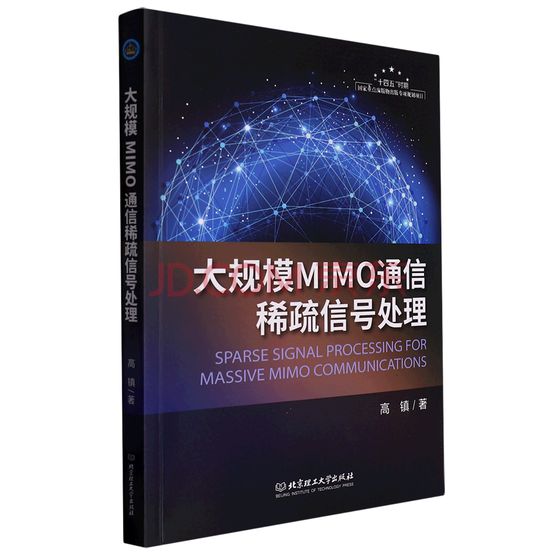
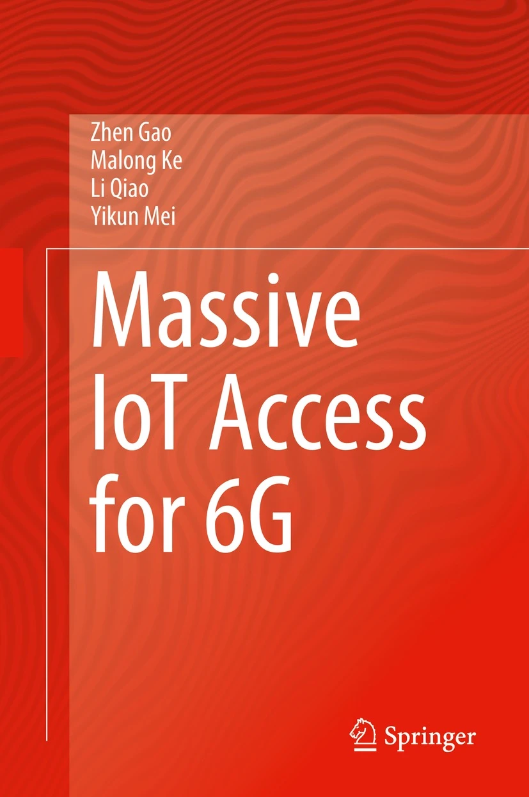
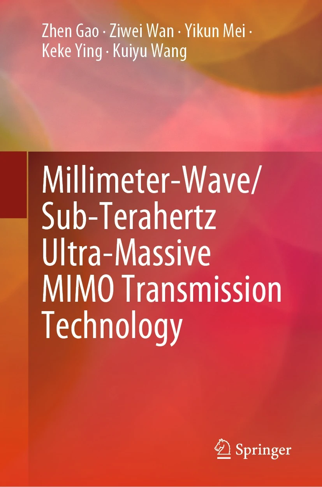

|
Dr. Zhen Gao (
高 镇
)
|
Latest News
- [2023.08] Yifei Zhang won the championship of the 2023 Wireless Big Data Competition (张翼飞获得第四届无线大数据竞赛冠军"智能多波束优化") 【北理工信息学院公众号报道】
- [2023.08] Dr. Zhen Gao gives a talk in Blue Ocean Forum 2023 (蓝海论坛报告《大规模MIMO系统海量设备免调度非正交接入》) [slide]
- [2023.07] Paper of Shicong Liu was accecpted by IEEE JSTSP (刘仕聪论文被IEEE JSTSP (IF=7.70)期刊录用)【知识数据协同驱动的无蜂窝大规模MIMO传输】
- [2023.07] 硕士生刘仕聪、王洋分别获得北京理工大学优秀硕士毕业论文荣誉；本科生王岳卿、王瑞琪获得北京理工大学优秀本科毕设。
- [2023.06] 博士生柯玛龙，硕士生刘仕聪、王洋，本科生王岳卿获得北京市优秀毕业生、北京理工大学优秀毕业生荣誉；本科生王瑞琪获得北京理工大学优秀毕业生荣誉。
- [2023.06] Yang Wang was awarded Xu-Teli Fellowship (王洋获得北理工学生最高荣誉奖学金——徐特立奖学金) 【北理工信息学院专题报道】
- [2023.06] Ziwei Wan was awarded Northern Industrial Scholarship (博士生万子维获得北方工业奖学金)
- [2023.06] Xingyu Zhou joined Qualcomm as an intern (周星宇获得高通公司实习岗位)
- [2023.05] Paper of Ziwei Wan was awarded Best Student Paper, EAI WiSATS 2022 (万子维论文被国际学术会议EAI WiSATS 2022评为最佳学生论文奖)
- [2023.05] Paper of Zhuoran Li was accecpted by IEEE JSTSP (李卓然论文被IEEE JSTSP (IF=7.70)期刊录用)【混合场波束偏移效应下的信道估计与定位】
- [2023.04] Shicong Liu was awarded Hong Kong PhD Fellowship Scheme (HKPFS) at CityU Hong Kong ( 刘仕聪获得港府奖学金资助在香港城市大学攻读博士学位 )
- [2023.04] Paper of Keke Ying was accepted by IEEE JSAC (应科柯论文被IEEE JSAC (IF=13.081)期刊录用)【低轨卫星星座协作式大规模随机接入】
- [2023.04] Dr. Zhen Gao is the recipient of Elsevier 2022 MOST Cited Chinese Researchers (高镇 入选爱思唯尔2022中国高被引学者)
- [2023.04] Paper of Yikun Mei was accepted by IEEE TVT (梅逸堃论文被IEEE TVT (IF=6.239)期刊录用)【超大规模MIMO系统海量接入】
- [2023.03] Paper of Malong Ke was accepted by IEEE JSAC (柯玛龙论文被IEEE JSAC (IF=13.081)期刊录用)【海量URLLC半盲检测: 无源/有源随机接入的统一框架】
- [2023.03] Paper of Keke Ying was accepted by IEEE WCM (应科柯论文被IEEE Wireless Commun. (IF=11.979)期刊录用)【可重构像素MIMO: 开辟电磁域信息传输新维度】
- [2023.02] Ph.D. student Ziwei Wan visits the University of Surrey ( 博士生万子维前往英国萨里大学Pei Xiao教授组访问交换 )
- [2023.02] Yang Wang was awarded 2022 Beijing Excellent Master Student in the field of Emergency Management ( 王洋获2022年度北京市应急管理领域优秀硕士研究生 ) 【北理工信息学院专题报道】
- [2023.01] Zhen Gao was awarded First Prize in Chinese Institute of Electronics (CIE) Technical Invention Award ( 高镇获2022年中国电子学会技术发明一等奖, 第三完成人 )
- [2022.12] Paper of Xingyu Zhou was accepted by IEEE Network ( 周星宇论文被IEEE Network (IF=10.294)期刊录用)【基于OTFS-NOMA的低轨卫星接入】
- [2022.12] Paper of Minghui Wu was accepted by IEEE JSAC ( 吴铭晖论文被IEEE JSAC (IF=13.081)期刊录用)【基于AI的率分裂和Thz智能超表面传输】
- [2022.11] Ph.D. student Ke, Qiao, and Mei were awarded prestigious PhD Scholarship ( 博士生柯玛龙、乔力、梅逸堃获得博士生特等奖学金)
- [2022.11] Dr. Zhen Gao was selected as a Beijing Science and Technology Rising Star ( 高镇入选2022年北京市科技新星计划 )
- [2022.11] Ph.D. student Li Qiao and M.S. student Yang Wang are awarded National Scholarship ( 博士生乔力和硕士生王洋获得研究生国家奖学金)
- [2022.11] Paper of Yang Wang was accepted by IEEE. Wireless Commun. ( 王洋 论文被IEEE WCM (IF=12.77)期刊录用)【基于AI的6G智能网络:从大规模MIMO到语义通信】
- [2022.10] Paper of Xingyu Zhou was accepted by IEEE Trans. Wireless Commun. ( 周星宇 论文被IEEE TWC (IF=8.346)期刊录用)【基于OTFS-NOMA的低轨卫星物联网接入】
- [2022.09] Prof. Zhen Gao gave a speech on RISTA ( RISTA 讲座录屏 )
- [2022.09] One Paper was accepted by IEEE Trans. Vehicular Technology ( IF = 6.239)【毫米波太赫兹MIMO超级上行接入】
- [2022.09] Paper of Ziwei Wan was accepted by IEEE Trans. Wireless Communications ( 万子维 论文被IEEE TWC (IF=8.346)期刊录用)【毫米波MIMO通感一体化】
- [2022.08] Ph.D. student Li Qiao visits Imperial College London ( 博士生乔力前往英国帝国理工学院Deniz Gündüz教授组访问交换 )
- [2022.08] Minghui Wu, Yifei Zhang, and Yang Wang are awarded Second Prize in the North China Division of the Graduate Electronic Design Competition ( 吴铭晖,张翼飞和王洋获得“兆易创新杯”第十七届中国研究生电子设计竞赛华北赛区二等奖)
- [2022.08] Zhen Gao was awarded First Prize by Chinese Institute of Command and Control ( 高镇获中国指挥与控制协会科学技术进步一等奖 )
- [2022.06] Yang Wang and Shicong Liu got internship offer of Meituan and ByteDance in related fields ( 王洋和刘仕聪分别获美团和字节跳动相关方向实习offer )
- [2022.06] Hongshan Liu was awarded the highest Scholarship of Beijing Institute of Technology ( 祝贺刘泓杉获得北京理工大学2022年徐特立奖学金(最高荣誉奖学金) )
- [2022.06] IWCMC Conference Paper of Malong Ke and Shicong Liu were elected as Best and Student Best paper resp. ( 柯玛龙、刘仕聪的IWCMC会议论文被分别评为最佳/学生最佳论文 )
- [2022.06] Hongshan Liu, Yifei Zhang, Zhuoran Li, and Ye Zeng were elected as Outstanding Graduates ( 刘泓杉(市级), 张翼飞(市级), 李卓然(市级), 曾烨(校级)获选优秀本科毕业生 )
- [2022.05] Invited Paper of Xingyu Zhou was accepted by Intelligent and Converged Networks( 周星宇特邀论文被ICN期刊录用 )【智能透射表面辅助的免授权海量接入】
- [2022.05] Paper of Ziwei Wan was accepted by IEEE Network ( 万子维 论文被IEEE Network (IF=10.693)期刊录用 )
- [2022.04] Dr. Zhen Gao is the recipient of Elsevier 2021 MOST Cited Chinese Researchers ( 高镇 入选爱思唯尔2021中国高被引学者 )
- [2022.03] Zhuoran Li and Hongshan Liu were awarded Outstanding Communist Youth League Member and Outstanding Students of SIE ( 李卓然，刘泓杉分别获优秀团员、致信精英表彰 )
- [2022.02] Paper of Minghui Wu was accepted by IEEE Journal on Selected Areas in Communications ( 吴铭晖 论文被JSAC(IF=9.144)期刊录用 )
- [2022.01] Prof. Gao was awarded First Prize in Natural Science by Chinese Institute of Electronics (CIE) ( 高镇被中国电子学会授予自然科学一等奖（空基高维时变信道下阵列宽带传输理论与方法） )
- [2022.01] Dr. Gao was invited as the Associate Editor of IEEE Systems Journal ( 高镇入选重要期刊IEEE Systems Journal编委 )
- [2021.12] Paper of Li Qiao was accepted by IEEE Journal on Selected Areas in Communications( 乔力 论文被JSAC(IF=9.144)期刊录用 )
- [2021.11] Li Qiao (SMC, ￥5,000), Zhuoran Li (Ceyear, ￥5,000), and Yifei Zhang (Diwen, ￥10,000) are awarded Social Scholarship( 乔力,李卓然和张翼飞获社会捐助类奖学金 )
- [2021.11] Yang Wang is awarded Xiaomi Special Scholarship (￥20,000)( 王洋获小米特等奖学金 )
- [2021.11] M.S. students Minghui Wu, Shicong Liu and Yang Wang are awarded Third Prize in Wireless AI Competition( 硕士生吴铭晖,刘仕聪和王洋获得无线通信AI竞赛三等奖 )
- [2021.10] Ph.D. students Anwen Liao, Malong Ke, Ziwei Wan and M.S. student Shicong Liu are awarded National Scholarship( 博士生廖安文,柯玛龙,万子维,硕士生刘仕聪获得研究生国家奖学金 )
- [2021.09] Paper of Yikun Mei was accepted by IEEE Transactions on Wireless Communications( 梅逸堃 论文被TWC(IF=7.016)期刊录用 )【海量物联网非正交多址接入】
- [2021.08] Dr. Zhen Gao is the recipient of Elsevier 2020 MOST Cited Chinese Researchers ( 高镇 入选爱思唯尔2020中国高被引学者 )
- [2021.08] Paper of Yang Wang was accepted by IEEE Internet of Things Journal ( 王洋论文被IoTJ期刊(IF=9.471)录用 )
- [2021.08] Paper of Keke Ying was awarded Best Paper by 10th IEEE/CIC International Conference on Communications in China ( 应科柯 获得第十届中国国际通信会议最佳论文奖 )
- [2021.07] Dr. Gao was invited as the Associate Editor of IEEE Communications Letters ( 高镇入选重要期刊IEEE Communications Letters编委 )
- [2021.07] Yang Wang and Minghui Wu were respectively awarded Second and Third Prizes of Wireless Big Data Competition ( 王洋 吴铭晖 获得第二届无线大数据竞赛-AI无线网络信道重构二等奖、三等奖 )
- [2021.07] Paper of Li Qiao was accepted by IEEE Transactions on Wireless Communications( 乔力 论文被TWC(IF=7.016)期刊录用 )【物联网海量机器类通信】
- [2021.06] Paper of Malong Ke was accepted by IEEE Wireless Communications Magazine( 柯玛龙 论文被WCM(IF=11.391)期刊录用 )【空基海量物联网接入】
- [2021.05] Paper of Shicong Liu was accepted by IEEE Communications Magazine( 刘仕聪 论文被COMMAG(IF=11.052)期刊录用 )【LEO卫星与B5G垂直应用】
- [2021.04] Paper of Xisuo Ma was accepted by IEEE Journal on Selected Areas in Communications( 马西锁 论文被JSAC(IF=11.42)期刊录用 )【模型驱动深度学习的MIMO传输】
- [2021.03] Paper of Anwen Liao was accepted by IEEE Journal on Selected Areas in Communications( 廖安文 论文被JSAC(IF=11.42)期刊录用 )
- [2021.02] Paper of Ziwei Wan was accepted by IEEE Transactions of Communications( 万子维 论文被TCOM(IF=5.646)期刊录用 )
- [2020.12] Minghui Wu was awarded Second Prize of National Competition of AI ( 吴铭晖 获得全国人工智能大赛二等奖 )
View More Earlier News
Research Interest
Zhen Gao (Member, IEEE) received the B.S. degree in information engineering from the Beijing Institute
of
Technology, Beijing, China, in July 2011, and the Ph.D. degree in communication and signal processing
from
the Tsinghua National Laboratory for Information Science and Technology, Department of Electronic
Engineering, Tsinghua University, China, in July 2016.
From 2014 to 2015, he visited the Communications and Signal Processing Group, Imperial College London,
U.K.,
for nearly one year. He is currently an Assistant Professor with the Advanced Research Institute of
Multidisciplinary Science (ARIMS) and the School of Information and Electronics, Beijing Institute of
Technology, Beijing, China. His research interests are in wireless communications, with a focus on
multicarrier modulations, multiple antenna systems, and sparse signal processing. He was a recipient of
the
IEEE Broadcast Technology Society, in 2016, the Scott Helt Memorial
Award (Best Paper) and IET Electronics Letters Premium Award (Best Paper), in 2016, the Exemplary
Reviewer
of the IEEE Communications Letters, in 2016, the Academic Star of Tsinghua University, in 2016, and the
Young Elite Scientists Sponsorship Program from the China Association for Science and Technology, from
2018
to 2021. He currently serves as an Associate Editor for IEEE Access and IEEE Communications Letters.
主要从事宽带通信与智能信号处理，包括物联网机器类通信、智能边缘计算、空天地一体化信息网络、6G大规模 MIMO 通信等。获得IEEE Trans. Broadcast. 2016 最佳论文奖、IET
Electron. Lett. 2016最佳论文奖、UCET 2020最佳论文、IEEE/CIC ICCC 2021最佳论文、IEEE IWCMC 2022最佳论文奖、EAI WiSATS
2023最佳学生论文奖
。发表SCI论文50余篇，包括9篇ESI高被引论文，2篇前0.1%热点论文，WoS数据库SCI他引1961次。2018年入选中国科协青年人才托举工程，2020年起连续入选爱思唯尔中国高被引学者，2022年入选北京市科技新星和山东省自然科学基金优青，2021
年获得中国电子学会自然科学一等奖，2022年获得中国电子学会技术发明一等奖。担任IEEE Transactions Vehicular Technology编委、IEEE Communications
Letters
编委、IEEE Systems Journal 编委、Frontiers in Communications and Networks 编委。
-
AI Enabling 6G Communications: Data-Driven or Model-Driven
Learning?
AI赋能的6G通信网络:数据驱动学习 vs 模型驱动学习?
The recent development of various mobile applications, especially those powered by artificial intelligence (AI), has sparked a discussion about the future development of wireless communications. With the global popularization of 5G, industry and science have started their adventure of future 6G design. In wireless communications, Model-Driven [R5] and Data-Driven [R7] methods are proposed in designing channel estimation, precoding, and feedback, while multiple trials on combining AI with Intelligent Reflecting Surfaces (IRS) [R6] or Unmanned Aerial Vehicles (UAVs) [R4] are being explored here.Related Work
[R1] Y. Wang, Z. Gao, D. Zheng, S. Chen, D. Gunduz, and H. V. Poor, "Transformer-Empowered 6G Intelligent Networks: From Massive MIMO Processing to Semantic Communication," accepted by IEEE Wireless Communications.
[R2] M. Wu, Z. Gao, Y. Huang, Z. Xiao, D. W. K. Ng, and Z. Zhang, "Deep Learning-Based Rate-Splitting Multiple Access for Reconfigurable Intelligent Surface-Aided Tera-Hertz Massive MIMO", accepted by IEEE Journal on Selected Areas in Communications.
[R3] Z. Gao, M. Wu, C. Hu, F. Gao, G. Wen, D. Zheng, J. Zhang, "Data-Driven Deep Learning Based Hybrid Beamforming for Aerial Massive MIMO-OFDM Systems With Implicit CSI," in IEEE Journal on Selected Areas in Communications, vol. 40, no. 10, pp. 2894-2913, Oct. 2022.
[R4] Y. Wang, Z. Gao, J. Zhang, X. Cao, D. Zheng, Y. Gao, D. W. K. Ng, M. D. Renzo, "Trajectory Design for UAV-Based Internet of Things Data Collection: A Deep Reinforcement Learning Approach," in IEEE Internet of Things Journal, vol. 9, no. 5, pp. 3899-3912, 1 Mar. 2022.
[R5] X. Ma, Z. Gao, F. Gao, M. D. Renzo, "Model-Driven Deep Learning Based Channel Estimation and Feedback for Millimeter-Wave Massive Hybrid MIMO Systems," in IEEE Journal on Selected Areas in Communications, vol. 39, no. 8, pp. 2388-2406, Aug. 2021.
[R6] S. Liu, Z. Gao, J. Zhang, M. D. Renzo and M. -S. Alouini, "Deep Denoising Neural Network Assisted Compressive Channel Estimation for mmWave Intelligent Reflecting Surfaces," IEEE Transactions on Vehicular Technology, vol. 69, no. 8, pp. 9223-9228, Aug. 2020.
[R7] X. Ma and Z. Gao, "Data-Driven Deep Learning to Design Pilot and Channel Estimator for Massive MIMO," IEEE Transactions on Vehicular Technology, vol. 69, no. 5, pp. 5677-5682, May 2020.
-
RIS-Assisted 6G MIMO Networks: Reflection? or Refraction? or
Both?
智能超表面(RIS)辅助的6G MIMO网络Reconfigurable intelligent surfaces (RISs) are regarded as one of the most promising techniques for enhancing the spectrum/energy efficiency of wireless systems. Channel estimation of traditional RIS-adied Broadband communication systems has been deeply investigated [R2], [R3], while the holographic RIS, the cutting-edge archetecture of RIS, that supports the next generation Terahertz Massive MIMO communications has also been studied [R2].
Related Work
[R1] M. Wu, Z. Gao, Y. Huang, Z. Xiao, D. W. K. Ng, and Z. Zhang, "Deep Learning-Based Rate-Splitting Multiple Access for Reconfigurable Intelligent Surface-Aided Tera-Hertz Massive MIMO", accepted by IEEE Journal on Selected Areas in Communications.
[R2] Z. Wan, Z. Gao, F. Gao, M. D. Renzo, M.-S. Alouini, "Terahertz Massive MIMO with Holographic Reconfigurable Intelligent Surfaces," in IEEE Transactions on Communications, vol. 69, no. 7, pp. 4732-4750, July 2021.
[R3] S. Liu, Z. Gao, J. Zhang, M. D. Renzo and M.-S. Alouini, "Deep Denoising Neural Network Assisted Compressive Channel Estimation for mmWave Intelligent Reflecting Surfaces," IEEE Transactions on Vehicular Technology, vol. 69, no. 8, pp. 9223-9228, Aug. 2020.
-
MIMO for Integrated space-air-ground-sea networks and LEO
satellite Internet
MIMO使能的空天地海一体化网络与低轨卫星互联网The emerging space-air-ground integrated network (SAGINs) has attracted intensive research and necessitates reliable and efficient aeronautical communications. We have investigated Terahertz Ultra-Massive (UM)-MIMO-based aeronautical communications and proposes an effective channel estimation and tracking scheme, which can solve the performance degradation problem caused by the unique triple delay-beam-Doppler squint effects of aeronautical terahertz UM-MIMO channels [R8]. We have also proposed an edge computing paradigm for massive IoT connectivity over High-Altitude Platform Networks (HAPNs) [R6].
Related Work
[R1] K. Ying, Z. Gao, S. Chen, M. Zhou, D. Zheng, S. Chatzinotas, B. Ottersten, and H. V. Poor, "Quasi-Synchronous Random Access for Massive MIMO-Based LEO Satellite Constellations," in IEEE Journal on Selected Areas in Communications, vol. 41, no. 6, pp. 1702-1722, June 2023.
[R2] Z. Gao, X. Zhou, J. Zhao, J. Li, C. Zhu, C. Hu, P. Xiao, S. Chatzinotas, D. W. K. Ng, B. Ottersten, "Grant-Free NOMA-OTFS Paradigm: Enabling Efficient Ubiquitous Access for LEO Satellite Internet-of-Things", accepted by IEEE Network.
[R3] X. Zhou, K. Ying, Z. Gao, Y. Wu, Z. Xiao, S. Chatzinotas, J. Yuan, and B. Ottersten, "Active Terminal Identification, Channel Estimation, and Signal Detection for Grant-Free NOMA-OTFS in LEO Satellite Internet-of-Things," in IEEE Transactions on Wireless Communications, vol. 22, no. 4, pp. 2847-2866, April 2023.
[R4] Z. Gao, M. Wu, C. Hu, F. Gao, G. Wen, D. Zheng, J. Zhang, "Data-Driven Deep Learning Based Hybrid Beamforming for Aerial Massive MIMO-OFDM Systems With Implicit CSI," in IEEE Journal on Selected Areas in Communications, vol. 40, no. 10, pp. 2894-2913, Oct. 2022.
[R5] L. Qiao, J. Zhang, Z. Gao, D. Zheng, M. J. Hossain, Y. Gao, D. W. K. Ng, and M. Di Renzo, "Joint Activity and Blind Information Detection for UAV-Assisted Massive IoT Access," in IEEE Journal on Selected Areas in Communications, vol. 40, no. 5, pp. 1489-1508, May 2022.
[R6] M. Ke, Z. Gao, Y. Huang, G. Ding, D. W. K. Ng, Q. Wu, J. Zhang, "An Edge Computing Paradigm for Massive IoT Connectivity Over High-Altitude Platform Networks," in IEEE Wireless Communications, vol. 28, no. 5, pp. 102-109, October 2021.
[R7] S. Liu, Z. Gao, Y. Wu, D. W. K. Ng, X. Gao, K.-K Wong, S. Chatzinotas, B. Ottersten, "LEO Satellite Constellations for 5G and Beyond: How Will They Reshape Vertical Domains?," in IEEE Communications Magazine, vol. 59, no. 7, pp. 30-36, July 2021.
[R8] A. Liao, Z. Gao, D. Wang, H. Wang, H. Yin, D. W. K. Ng, M.-S. Alouini, "Terahertz Ultra-Massive MIMO-Based Aeronautical Communications in Space-Air-Ground Integrated Networks," in IEEE Journal on Selected Areas in Communications, vol. 39, no. 6, pp. 1741-1767, June 2021.
-
Massive IoT and Machine-Type Communications: From Cloud Computing
to Edge Computing
大规模物联网和海量机器类通信: 从云计算到边缘计算The widespread applications of the Internet of Things (IoT) in a variety of fields, e.g. industry, agriculture, medicine, and traffic, have spurred an explosive growth in the number of IoT devices. However, reliable massive access for massive IoT connectivity is not supported by the current wireless networks. Against this background, we proposed a efficient grant-free massive access scheme, which exploits the rich spatial dimensionality offered massive MIMO for improved active user detection and channel estimation performance [R13]. Meanwhile, considering the cooperation of multiple access points, we investigate two processing paradigms, i.e., cloud computing and edge computing, at the receiver for the proposed massive access scheme [R11]. Moreover, the work was extended to joint activity and data detection for grant-free massive access [R9]. Besides, we further propose a media modulation based mMTC solution for the throughput increase, where a structured orthogonal matching pursuit algorithm is developed for detecting the active devices and their data [R10].
Related Work
[R1] K. Ying, Z. Gao, S. Chen, M. Zhou, D. Zheng, S. Chatzinotas, B. Ottersten, and H. V. Poor, "Quasi-Synchronous Random Access for Massive MIMO-Based LEO Satellite Constellations," in IEEE Journal on Selected Areas in Communications, vol. 41, no. 6, pp. 1702-1722, June 2023.
[R2] Y. Mei, Z. Gao, D. Mi, M. Zhou, D. Zheng, M. Matthaiou, P. Xiao, R. Schober, "Massive Access in Extra Large-Scale MIMO With Mixed-ADC Over Near-Field Channels," accepted by IEEE Trans. Vehicular Technology, 2023.
[R3] M. Ke, Z. Gao, M. Zhou, D. Zheng, D. W. K. Ng, H. V. Poor, "Next-Generation URLLC with Massive Devices: A Unified Semi-Blind Detection Framework for Sourced and Unsourced Random Access," accepted by IEEE J. Sel. Areas Commun., 2023.
[R4] Z. Gao, X. Zhou, J. Zhao, J. Li, C. Zhu, C. Hu, P. Xiao, S. Chatzinotas, D. W. K. Ng, B. Ottersten, "Grant-Free NOMA-OTFS Paradigm: Enabling Efficient Ubiquitous Access for LEO Satellite Internet-of-Things", accepted by IEEE Network.
[R5] X. Zhou, K. Ying, Z. Gao, Y. Wu, Z. Xiao, S. Chatzinotas, J. Yuan, and B. Ottersten, "Active Terminal Identification, Channel Estimation, and Signal Detection for Grant-Free NOMA-OTFS in LEO Satellite Internet-of-Things," in IEEE Transactions on Wireless Communications, vol. 22, no. 4, pp. 2847-2866, April 2023.
[R6] H. Xiu, Z. Gao, et al., "Joint Activity Detection and Channel Estimation for Massive IoT Access Based on Millimeter-Wave/Terahertz Multi-Panel Massive MIMO," in IEEE Transactions on Vehicular Technology, 2022.
[R7] L. Qiao, J. Zhang, Z. Gao, D. Zheng, M. J. Hossain, Y. Gao, D. W. K. Ng, and M. Di Renzo, "Joint Activity and Blind Information Detection for UAV-Assisted Massive IoT Access," in IEEE Journal on Selected Areas in Communications, vol. 40, no. 5, pp. 1489-1508, May 2022.
[R8] M. Ke, Z. Gao, Y. Huang, G. Ding, D. W. K. Ng, Q. Wu, J. Zhang, "An Edge Computing Paradigm for Massive IoT Connectivity Over High-Altitude Platform Networks," in IEEE Wireless Communications, vol. 28, no. 5, pp. 102-109, October 2021.
[R9] Y. Mei, Z. Gao, Y. Wu, W. Chen, D. W. K. Ng, M. Di Renzo, "Compressive Sensing-Based Joint Activity and Data Detection for Grant-Free Massive IoT Access," in IEEE Transactions on Wireless Communications, vol. 21, no. 3, pp. 1851-1869, March 2022.
[R10] L. Qiao, J. Zhang, Z. Gao, D. W. K. Ng, M. D. Renzo and M. -S. Alouini, "Massive Access in Media Modulation Based Massive Machine-Type Communications," in IEEE Transactions on Wireless Communications, vol. 21, no. 1, pp. 339-356, Jan. 2022.
[R11] M. Ke, Z. Gao, Y. Wu, X. Gao and K. Wong, "Massive Access in Cell-Free Massive MIMO-Based Internet of Things: Cloud Computing and Edge Computing Paradigms," IEEE Journal on Selected Areas in Communications, vol. 39, no. 3, pp. 756-772, March 2021.
[R12] L. Qiao, J. Zhang, Z. Gao, S. Chen and L. Hanzo, "Compressive Sensing Based Massive Access for IoT Relying on Media Modulation Aided Machine Type Communications," IEEE Transactions on Vehicular Technology, vol. 69, no. 9, pp. 10391-10396, Sept. 2020.
[R13] M. Ke, Z. Gao, Y. Wu, X. Gao and R. Schober, "Compressive Sensing-Based Adaptive Active User Detection and Channel Estimation: Massive Access Meets Massive MIMO," IEEE Transactions on Signal Processing, vol. 68, pp. 764-779, 2020.
-
Toward Ultra Large-Scale MIMO: From Millimeter-Wave to
Terahertz
迈向超大规模MIMO通信: 从毫米波到太赫兹The massive MIMO systems provide considerable beamforming gain and fine-grain spatial multiplexing for mmWave and Terahertz communications. Both the hardware design and software design are critical for mmWave/Terahertz massive MIMO. The lens-array and reconfigurable intelligent surface with antenna switching network [R6] [R4] is adopted for mmWave communications to cope with the high hardware complexity and power consumption of traditional massive MIMO. Moreover, in the face of severe spatial wideband effective in the broadband Terahertz massive MIMO, an architecture based on true-time-delay line is presented in [R3]. With the novel hardware architectures above, advanced algorithms, such as ESPRIT [R3] [R7], is also proposed to estimate the large-scale channels via limited pilot overhead.
Related Work
[R1] Y. Mei, Z. Gao, D. Mi, M. Zhou, D. Zheng, M. Matthaiou, P. Xiao, R. Schober, "Massive Access in Extra Large-Scale MIMO With Mixed-ADC Over Near-Field Channels," accepted by IEEE Trans. Vehicular Technology, 2023.
[R2] M. Wu, Z. Gao, Y. Huang, Z. Xiao, D. W. K. Ng, and Z. Zhang, "Deep Learning-Based Rate-Splitting Multiple Access for Reconfigurable Intelligent Surface-Aided Tera-Hertz Massive MIMO", accepted by IEEE Journal on Selected Areas in Communications.
[R3] A. Liao, Z. Gao, D. Wang, H. Wang, H. Yin, D. W. K. Ng, M.-S. Alouini, "Terahertz Ultra-Massive MIMO-Based Aeronautical Communications in Space-Air-Ground Integrated Networks," in IEEE Journal on Selected Areas in Communications, vol. 39, no. 6, pp. 1741-1767, June 2021.
[R4] Z. Wan, Z. Gao, F. Gao, M. D. Renzo, M.-S. Alouini, "Terahertz Massive MIMO with Holographic Reconfigurable Intelligent Surfaces," in IEEE Transactions on Communications, vol. 69, no. 7, pp. 4732-4750, July 2021.
[R5] Y. Sun, Z. Gao, H. Wang, B. Shim, G. Gui, G. Mao, F. Adachi, "Principal Component Analysis-Based Broadband Hybrid Precoding for Millimeter-Wave Massive MIMO Systems," IEEE Transactions on Wireless Communications, vol. 19, no. 10, pp. 6331-6346, Oct. 2020.
[R6] Z. Wan, Z. Gao, B. Shim, K. Yang, G. Mao and M. Alouini, "Compressive Sensing Based Channel Estimation for Millimeter-Wave Full-Dimensional MIMO With Lens-Array," IEEE Transactions on Vehicular Technology, vol. 69, no. 2, pp. 2337-2342, Feb. 2020.
[R7] A. Liao, Z. Gao, H. Wang, S. Chen, M. Alouini and H. Yin, "Closed-Loop Sparse Channel Estimation for Wideband Millimeter-Wave Full-Dimensional MIMO Systems," IEEE Transactions on Communications , vol. 67, no. 12, pp. 8329-8345, Dec. 2019.
[R8] Jiening Mao, Z. Gao, Yongpeng Wu and Muhammad Slim Alouini, "Over-sampling codebook-based hybrid minimum sum-mean-square-error precoding for millimeter-wave 3D-MIMO," IEEE Wireless Communications Letters, vol. 7, no. 6, pp. 938-941, Dec. 2018.
-
Integrated sensing and communication (ISAC) for 6G
networks
面向6G的通信感知一体化The Integrated Sensing and Communication (ISAC) is regarded as a promising paradigm shift for 6G networks, aiming to develop novel hardware architectures and signal processing techniques for jointly enabling radar sensing and communications with scarce spectrum resource. In [R2] we propose to deploy a radar unit with widely spaced array (WSA) at the base station side, which cooperates with the existing communication unit and thus realizes the radar functionality without complex modification to the current cellular networks. The WSA enhances the angular resolution of radar sensing at the cost of angular ambiguity. We further levearage the spatial consistency property, i.e., the channel angles are shared at the radar unit and communication unit, to eliminate the angular ambiguity for the accurate radar sensing. A tailored compressive sensing-based algorithm is proposed to solve the problem.
Related Work
[R1] Z. Li, Z. Gao and T. Li, "Sensing User's Channel and Location with Terahertz Extra-Large Reconfigurable Intelligent Surface under Hybrid-Field Beam Squint Effect," accepted by IEEE J. Sel. Top. Sign. Proces, 2023
[R2] Z. Gao, Z. Wan, D. Zheng, S. Tan, C. Masouros, D. W. K. Ng, and S. Chen, Integrated Sensing and Communication With mmWave Massive MIMO: A Compressed Sampling Perspective," in IEEE Transactions on Wireless Communications, vol. 22, no. 3, pp. 1745-1762, March 2023.
Publications
Book Chapters :
|  |  |  |
[1] Zhen Gao, Ziwei Wan, Yikun Mei, Keke Ying, and Kuiyu Wang, "Millimeter-Wave/Sub-Terahertz Ultra-Massive MIMO Transmission Technology", Springer Press. [Buy]
[2] 高镇, "大规模MIMO通信稀疏信号处理", 北京理工大学出版社. [京东]
[3] Zhen Gao, Malong Ke, Li Qiao, and Yikun Mei, "Massive IoT Access for 6G", Springer Press. [Buy] [京东]
[4] Zhen Gao, Linglong Dai, Xinyu Gao, and Zhaocheng Wang, "Channel estimation in mmWave massive MIMO systems", Chapter 6 of book MmWave Massive MIMO: A paradigm for 5G, Elsevier Press.
[5] Zhen Gao, Linglong Dai, Xinyu Gao, Muhammad Zeeshan Shakir, and Zhaocheng Wang, "Fronthaul design for mmWave massive MIMO HetNets", Chapter 12 of book MmWave Massive MIMO: A paradigm for 5G, Elsevier Press.
[6] Xinyu Gao, Linglong Dai, Zhen Gao, and Zhaocheng Wang, "Precoding for mmWave MIMO", Chapter 5 of book MmWave Massive MIMO: A paradigm for 5G, Elsevier Press.
[7] 杨昉, 刘思聪, 高镇. "5G 移动通信空口新技术 ", 电子工业出版社. [Buy]
Journals :
[57] Z. Gao, S. Liu, Y. Su, Z. Li, and D. Zheng, "Hybrid Knowledge-Data Driven Channel Semantic Acquisition and Beamforming for Cell-Free Massive MIMO", to appear in IEEE J. Sel. Topics Signal Process. [arXiv] [IEEE URL]
[56] Z. Li, Z. Gao and T. Li, "Sensing User's Channel and Location with Terahertz Extra-Large Reconfigurable Intelligent Surface under Hybrid-Field Beam Squint Effect," accepted by IEEE J. Sel. Top. Sign. Proces, 2023. [arXiv] [IEEE URL] [ Codes ]
[55] K. Ying, Z. Gao, S. Chen, M. Zhou, D. Zheng, S. Chatzinotas, B. Ottersten, and H. V. Poor, "Quasi-Synchronous Random Access for Massive MIMO-Based LEO Satellite Constellations," in IEEE Journal on Selected Areas in Communications, vol. 41, no. 6, pp. 1702-1722, June 2023. [arXiv] [IEEE URL] [ Codes ]
[54] Y. Mei, Z. Gao, D. Mi, M. Zhou, D. Zheng, M. Matthaiou, P. Xiao, R. Schober, "Massive Access in Extra Large-Scale MIMO With Mixed-ADC Over Near-Field Channels," accepted by IEEE Trans. Vehicular Technology, 2023. [arXiv] [IEEE URL] [ Codes ]
[53] Z. Gao, H. Xiu, Y. Mei, A. Liao, M. Ke, C. Hu, M. S. Alouini, "Multi-panel extra-large scale MIMO based joint activity detection and channel estimation for near-field massive IoT access," in China Communications, vol. 20, no. 5, pp. 232-243, May 2023. [IEEE URL]
[52] M. Ke, Z. Gao, M. Zhou, D. Zheng, D. W. K. Ng and H. V. Poor, "Next-Generation URLLC With Massive Devices: A Unified Semi-Blind Detection Framework for Sourced and Unsourced Random Access," in IEEE Journal on Selected Areas in Communications, vol. 41, no. 7, pp. 2223-2244, July 2023. [arXiv] [IEEE URL]
[51] K. Ying, Z. Gao, S. Chen, X. Gao, M. Matthaiou, R. Zhang, and R. Schober, "Reconfigurable Massive MIMO: Harnessing the Power of the Electromagnetic Domain for Enhanced Information Transfer," accepted by IEEE Wireless Communications, 2023. [arXiv] [IEEE URL]
[50] X. Zhu, Y. Huang, S. Wang, Q. Wu, X. Ge, Y. Liu, Z. Gao, "Dynamic Spectrum Anti-Jamming with Reinforcement Learning Based on Value Function Approximation," in IEEE Wireless Commun. Lett. vol. 12, no. 2, pp. 386-390, Feb. 2023. [IEEE URL]
[49] J. Zhao, Y. Zhu, K. Cai, Z. Gao, Z. Han and L. Hanzo, "Multiple-Antenna Aided Aeronautical Communications in Air-Ground Integrated Networks: Channel Estimation, Reliable Transmission, and Multiple Access," in IEEE Wireless Communications [arXiv] [IEEE URL]
[48] Y. Wang, Z. Gao, D. Zheng, S. Chen, D. Gunduz, and H. V. Poor, "Transformer-Empowered 6G Intelligent Networks: From Massive MIMO Processing to Semantic Communication," accepted by IEEE Wireless Communications. [arXiv] [IEEE URL] [Tutorial Link]
[47] Z. Gao, X. Zhou, J. Zhao, J. Li, C. Zhu, C. Hu, P. Xiao, S. Chatzinotas, D. W. K. Ng, B. Ottersten, "Grant-Free NOMA-OTFS Paradigm: Enabling Efficient Ubiquitous Access for LEO Satellite Internet-of-Things," in IEEE Network, vol. 37, no. 1, pp. 18-26, March 2023. [arXiv] [IEEE URL]
[46] M. Wu, Z. Gao, Y. Huang, Z. Xiao, D. W. K. Ng and Z. Zhang, "Deep Learning-Based Rate-Splitting Multiple Access for Reconfigurable Intelligent Surface-Aided Tera-Hertz Massive MIMO," in IEEE Journal on Selected Areas in Communications, vol. 41, no. 5, pp. 1431-1451, May 2023. [arXiv] [IEEE URL] [ Codes ]
[45] X. Zhou, K. Ying, Z. Gao, Y. Wu, Z. Xiao, S. Chatzinotas, J. Yuan, and B. Ottersten, "Active Terminal Identification, Channel Estimation, and Signal Detection for Grant-Free NOMA-OTFS in LEO Satellite Internet-of-Things," in IEEE Transactions on Wireless Communications, vol. 22, no. 4, pp. 2847-2866, April 2023. [arXiv] [IEEE URL]
[44] H. Xiu, Z. Gao, et al., "Joint Activity Detection and Channel Estimation for Massive IoT Access Based on Millimeter-Wave/Terahertz Multi-Panel Massive MIMO," in IEEE Transactions on Vehicular Technology, vol. 72, no. 1, pp. 1349-1354, Jan. 2023. [IEEE URL]
[43] B. Zhu, E. Bedeer, H. H. Nguyen, R. Barton and Z. Gao, "UAV Trajectory Planning for AoI-Minimal Data Collection in UAV-Aided IoT Networks by Transformer," in IEEE Transactions on Wireless Communications, vol. 22, no. 2, pp. 1343-1358, Feb. 2023. [IEEE URL]
[42] Z. Gao, Z. Wan, D. Zheng, S. Tan, C. Masouros, D. W. K. Ng, and S. Chen, Integrated Sensing and Communication With mmWave Massive MIMO: A Compressed Sampling Perspective," in IEEE Transactions on Wireless Communications, vol. 22, no. 3, pp. 1745-1762, March 2023. [arXiv] [IEEE URL] [ Codes ]
[41] J. Huang, Y. Yang, Z. Gao, D. He and D. W. K. Ng, "Dynamic Spectrum Access for D2D-Enabled Internet of Things: A Deep Reinforcement Learning Approach," in IEEE Internet of Things Journal, vol. 9, no. 18, pp. 17793-17807, 15 Sept.15, 2022. [IEEE URL]
[40] Z. Wan, Z. Gao, M. D. Renzo and L. Hanzo, "The Road to Industry 4.0 and Beyond: A Communications-, Information-, and Operation Technology Collaboration Perspective," in IEEE Network, vol. 36, no. 6, pp. 157-164, November/December 2022. [IEEE URL]
[39] X. Zhou, K. Ying, S. Liu, M. Ke, Z. Gao and M.-S. Alouini, "Reconfigurable intelligent surface assisted grant-free massive access," in Intelligent and Converged Networks, vol. 3, no. 1, pp. 134-143, March 2022, doi: 10.23919/ICN.2022.0009. [IEEE URL]
[38] Z. Gao, M. Wu, C. Hu, F. Gao, G. Wen, D. Zheng, J. Zhang, "Data-Driven Deep Learning Based Hybrid Beamforming for Aerial Massive MIMO-OFDM Systems With Implicit CSI," in IEEE Journal on Selected Areas in Communications, vol. 40, no. 10, pp. 2894-2913, Oct. 2022, doi: 10.1109/JSAC.2022.3196064. (SCI Q1 Top, IF=9.619) [arXiv] [ Codes ] [IEEE URL]
[37] L. Qiao, J. Zhang, Z. Gao, D. Zheng, M. J. Hossain, Y. Gao, D. W. K. Ng, and M. Di Renzo, "Joint Activity and Blind Information Detection for UAV-Assisted Massive IoT Access," in IEEE Journal on Selected Areas in Communications, vol. 40, no. 5, pp. 1489-1508, May 2022, doi: 10.1109/JSAC.2022.3143255. (SCI Q1 Top, IF=9.619) [arXiv] [IEEE URL]
[36] M. Ke, Z. Gao, Y. Huang, G. Ding, D. W. K. Ng, Q. Wu, J. Zhang, "An Edge Computing Paradigm for Massive IoT Connectivity Over High-Altitude Platform Networks," in IEEE Wireless Communications, vol. 28, no. 5, pp. 102-109, October 2021. (SCI Q1 Top, IF=11.979) [IEEE URL]
[35] Y. Mei, Z. Gao, Y. Wu, W. Chen, D. W. K. Ng, M. Di Renzo, "Compressive Sensing-Based Joint Activity and Data Detection for Grant-Free Massive IoT Access," in IEEE Transactions on Wireless Communications, vol. 21, no. 3, pp. 1851-1869, March 2022, doi: 10.1109/TWC.2021.3107576. (Pre-Print) [arXiv] [ Codes ] [IEEE URL]
[34] Y. Wang, Z. Gao, J. Zhang, X. Cao, D. Zheng, Y. Gao, D. W. K. Ng, M. D. Renzo, "Trajectory Design for UAV-Based Internet of Things Data Collection: A Deep Reinforcement Learning Approach," in IEEE Internet of Things Journal, vol. 9, no. 5, pp. 3899-3912, 1 March1, 2022, doi: 10.1109/JIOT.2021.3102185. (SCI Q1 Top, IF=9.417) [URL] [ Codes ]
[33] S. Liu, Z. Gao, Y. Wu, D. W. K. Ng, X. Gao, K.-K Wong, S. Chatzinotas, B. Ottersten, "LEO Satellite Constellations for 5G and Beyond: How Will They Reshape Vertical Domains?," in IEEE Communications Magazine, vol. 59, no. 7, pp. 30-36, July 2021. (SCI Q1 Top, IF=9.619) [URL]
[32] L. Qiao, J. Zhang, Z. Gao, D. W. K. Ng, M. D. Renzo and M. -S. Alouini, "Massive Access in Media Modulation Based Massive Machine-Type Communications," in IEEE Transactions on Wireless Communications, vol. 21, no. 1, pp. 339-356, Jan. 2022, doi: 10.1109/TWC.2021.3095484. [URL] [Slides] [ Codes ]
[31] X. Ma, Z. Gao, F. Gao, M. D. Renzo, "Model-Driven Deep Learning Based Channel Estimation and Feedback for Millimeter-Wave Massive Hybrid MIMO Systems," in IEEE Journal on Selected Areas in Communications, vol. 39, no. 8, pp. 2388-2406, Aug. 2021. (SCI Q1 Top, IF=11.42) [URL] [ Codes ]
[30] A. Liao, Z. Gao, D. Wang, H. Wang, H. Yin, D. W. K. Ng, M.-S. Alouini, "Terahertz Ultra-Massive MIMO-Based Aeronautical Communications in Space-Air-Ground Integrated Networks," in IEEE Journal on Selected Areas in Communications, vol. 39, no. 6, pp. 1741-1767, June 2021. (SCI Q1 Top, IF=11.42) [URL] [ Codes ]
[29] Z. Wan, Z. Gao, F. Gao, M. D. Renzo, M.-S. Alouini, "Terahertz Massive MIMO with Holographic Reconfigurable Intelligent Surfaces," in IEEE Transactions on Communications, vol. 69, no. 7, pp. 4732-4750, July 2021. [URL] [arXiv] [ Codes ]
[28] S. Lyu, Z. Wang, Z. Gao, H. He and L. Hanzo, "Lattice-Based mmWave Hybrid Beamforming," in IEEE Transactions on Communications, vol. 69, no. 7, pp. 4907-4920, July 2021. [URL]
[27] M. Ke, Z. Gao, Y. Wu, X. Gao and K. Wong, "Massive Access in Cell-Free Massive MIMO-Based Internet of Things: Cloud Computing and Edge Computing Paradigms," IEEE Journal on Selected Areas in Communications, vol. 39, no. 3, pp. 756-772, March 2021. (SCI Q1 Top, IF=11.42) [URL] [arXiv] [ Codes ] [Slides]
[26] S. Liu, Z. Gao, J. Zhang, M. D. Renzo and M. -S. Alouini, "Deep Denoising Neural Network Assisted Compressive Channel Estimation for mmWave Intelligent Reflecting Surfaces," IEEE Transactions on Vehicular Technology, vol. 69, no. 8, pp. 9223-9228, Aug. 2020. (SCI Q2, IF=5.379) [URL] [ Codes ]
[25] L. Qiao, J. Zhang, Z. Gao, S. Chen and L. Hanzo, "Compressive Sensing Based Massive Access for IoT Relying on Media Modulation Aided Machine Type Communications," IEEE Transactions on Vehicular Technology, vol. 69, no. 9, pp. 10391-10396, Sept. 2020. (SCI Q2, IF=5.379) [URL] [arXiv] [ Codes ]
[24] Y. Sun, Z. Gao, H. Wang, B. Shim, G. Gui, G. Mao, F. Adachi, "Principal Component Analysis-Based Broadband Hybrid Precoding for Millimeter-Wave Massive MIMO Systems," IEEE Transactions on Wireless Communications, vol. 19, no. 10, pp. 6331-6346, Oct. 2020. (SCI Q1 Top, IF=6.779) [URL] [arXiv]
[23] X. Ma and Z. Gao, "Data-Driven Deep Learning to Design Pilot and Channel Estimator for Massive MIMO," IEEE Transactions on Vehicular Technology, vol. 69, no. 5, pp. 5677-5682, May 2020. (SCI Q2, IF=5.379) [URL]
[22] K. Ying, Z. Gao, S. Lyu, Y. Wu, H. Wang and M. Alouini, "GMD-Based Hybrid Beamforming for Large Reconfigurable Intelligent Surface Assisted Millimeter-Wave Massive MIMO," IEEE Access, vol. 8, pp. 19530-19539, 2020. (SCI Q2, IF=3.745) [URL] [ Codes ]
[21] M. Ke, Z. Gao, Y. Wu, X. Gao and R. Schober, "Compressive Sensing-Based Adaptive Active User Detection and Channel Estimation: Massive Access Meets Massive MIMO," IEEE Transactions on Signal Processing, vol. 68, pp. 764-779, 2020. (SCI Q1 Top, IF=5.028) [URL] [arXiv] [ Codes ]
[20] Z. Wan, Z. Gao, B. Shim, K. Yang, G. Mao and M. Alouini, "Compressive Sensing Based Channel Estimation for Millimeter-Wave Full-Dimensional MIMO With Lens-Array," IEEE Transactions on Vehicular Technology, vol. 69, no. 2, pp. 2337-2342, Feb. 2020. (SCI Q2, IF=5.379) [URL] [arXiv] [ Codes ]
[19] A. Liao, Z. Gao, H. Wang, S. Chen, M. Alouini and H. Yin, "Closed-Loop Sparse Channel Estimation for Wideband Millimeter-Wave Full-Dimensional MIMO Systems," IEEE Transactions on Communications , vol. 67, no. 12, pp. 8329-8345, Dec. 2019. (SCI Q1 Top, IF=5.646.) [URL] [ Codes ]
[18] Jiening Mao, Zhen Gao, Yongpeng Wu and Muhammad Slim Alouini, "Over-sampling codebook-based hybrid minimum sum-mean-square-error precoding for millimeter-wave 3D-MIMO," IEEE Wireless Communications Letters, vol. 7, no. 6, pp. 938-941, Dec. 2018. (SCI Q3, IF=4.66) [URL] [ Codes ]
[17] Zhen Gao, Linglong Dai, Shuangfeng Han, Chih-Lin I, Zhaocheng Wang, and Lajos Hanzo, "Compressive sensing techniques for next-generation wireless communications," IEEE Wireless Communications, vol. 25, no. 4, pp. 144-153, Jun. 2018. (SCI Q1 Top, IF=11.391) [URL]
[16] A. Liao, Z. Gao, Y. Wu, H. Wang and M. Alouini, "2D Unitary ESPRIT Based Super-Resolution Channel Estimation for Millimeter-Wave Massive MIMO With Hybrid Precoding," IEEE Access, vol. 5, pp. 24747-24757, 2017. (SCI Q2, IF=3.745.) [URL] [ Codes ]
[15] Zhen Gao, Linglong Dai, Chenhao Qi, Chau Yuen, and Zhaocheng Wang, "Near-optimal signal detector based on structured compressive sensing for massive SM-MIMO," IEEE Transactions on Vehicular Technology, vol. 66, no. 2, pp. 1860-1865, Feb. 2017. (SCI Q2, IF=5.379) [URL]
[14] Zhen Gao, Chen Hu, Linglong Dai and Zhaocheng Wang, "Channel estimation for millimeter-wave massive MIMO with hybrid precoding over frequency-selective fading channels," IEEE Communications Letters, vol. 20, no. 6, pp. 1259-1262, June 2016. (SCI Q3, IF=3.419) [URL]
[13] Zhen Gao, Linglong Dai, Wei Dai, Byonghyo Shim, and Zhaocheng Wang, "Structured compressive sensing-based spatio-temporal joint channel estimation for FDD massive MIMO," IEEE Transactions on Communications, vol. 64, no. 2, pp. 601-617, Feb. 2016. (SCI Q1 Top, IF=5.646) [URL]
[12] Zhen Gao, Linglong Dai, Zhaocheng Wang, Sheng Chen, and Lajos Hanzo, "Compressive sensing based multiuser detector for the large-scale SM-MIMO uplink," IEEE Transactions on Vehicular Technology, vol. 65, no. 10, pp. 8725-8730, Oct. 2016. (SCI Q2, IF=5.379) [URL]
[11] Zhen Gao, Linglong Dai, De Mi, Zhaocheng Wang, Muhammad Imran, and Muhammad Shakir, "MmWave massive MIMO based wireless backhaul for 5G ultra-dense network," IEEE Wireless Communications, vol. 22, no. 5, pp. 13-21, Oct. 2015. [ESI High Citation] (SCI Q1 Top, IF=11.391) [URL]
[10] Zhen Gao, Linglong Dai, Zhaocheng Wang, and Sheng Chen, "Spatially common sparsity based adaptive channel estimation and feedback for FDD massive MIMO," IEEE Transactions on Signal Processing, vol. 63, no. 23, pp. 6169-6183, Dec. 2015. (SCI Q1 Top, IF=5.028) [URL] [ Codes ]
[9] Zhen Gao, Linglong Dai, Chau Yuen, and Zhaocheng Wang, "Asymptotic orthogonality analysis of time-domain sparse massive MIMO channels," IEEE Communications Letters, vol. 19, no. 10, pp. 1826-1829, Oct. 2015. (SCI Q3, IF=3.419) [URL]
[8] Zhen Gao, Chao Zhang, and Zhaocheng Wang, "Robust preamble design for synchronization, signaling transmission, and channel estimation," IEEE Transactions on Broadcasting, vol. 61, no. 1, pp. 98-104, Mar. 2015. [IEEE Broadcast Technology Society 2016 Scott Helt Memorial Award] (SCI Q2, IF=3.419) [URL]
[7] Zhen Gao, Chao Zhang, Zhaocheng Wang, and Sheng Chen, "Priori-Information Aided Iterative Hard Threshold: A Low-Complexity High-Accuracy Compressive Sensing Based Channel Estimation for TDS-OFDM," IEEE Transactions on Wireless Communications, vol. 14, no. 1, pp. 242-251, Jan. 2015. (SCI Q1 Top, IF=6.779) [URL]
[6] Zhen Gao, Linglong Dai, Zhaohua Lu, Chau Yuen, and Zhaocheng Wang, "Super-resolution sparse MIMO-OFDM channel estimation based on spatial and temporal correlations," IEEE Communications Letters, vol. 18, no. 7, pp. 1266-1269, Jul. 2014. (SCI Q3, IF=3.419) [URL]
[5] Zhen Gao, Linglong Dai, and Zhaocheng Wang, "Structured compressive sensing based superimposed pilot design in downlink large-scale MIMO systems," Electronics Letters, vol. 50, no. 12 pp. 896-898, Jun. 2014. [IET 2016 Electronics Letters Premium Award] (SCI Q4, IF=1.316) [URL]
[4] Zhenyu Xiao, Lipeng Zhu, Zhen Gao, Dapeng Oliver Wu, and Xiang-Gen Xia, "User fairness non-orthogonal multiple access (NOMA) for millimeter-wave communications with analog beamforming," IEEE Transactions on Wireless Communications, vol. 18, no. 7, pp. 3411-3423, July 2019. (SCI Q1 Top, IF=6.779) [URL]
[3] Kai Yang, Nan Yang, Neng Ye, Min Jia, Zhen Gao, and Rongfei Fan, "Non-orthogonal multiple access: Achieving sustainable future radio access," IEEE Communications Magazine, vol. 57, no. 2, pp. 116-121, Feb. 2019. (SCI Q1 Top, IF=11.052) [URL]
[2] Chen Hu, Linglong Dai, Talha Mir, Zhen Gao, and Jun Fang, "Super-resolution channel estimation for mmWave massive MIMO with hybrid precoding," IEEE Transactions on Vehicular Technology, vol. 67, no. 9, pp. 8954-8958, Sep. 2018. (SCI Q2, IF=5.379) [URL]
[1] Wenqian Shen, Linglong Dai, Zhen Gao and Zhaocheng Wang, "Spatially correlated channel estimation based on block iterative support detection for massive MIMO," Electronics Letters, vol. 51, no. 7. pp. 587-588, Apr. 2015. (SCI Q4, IF=1.316) [URL]
Conferences :
[31] M. Wu, Z. Wan, Y. Wang, S. Liu and Z. Gao, "Deep Learning-Based Rate-Splitting Multiple Access for Massive MIMO-OFDM Systems With Imperfect CSIT," 2022 International Symposium on Wireless Communication Systems (ISWCS), Hangzhou, China, 2022, pp. 1-6. [URL]
[30] M. Wu, Z. Gao, Z. Gao, D. Wu, Y. Yang and Y. Huang, "Deep Learning-Based Hybrid Precoding for FDD Massive MIMO-OFDM Systems with a Limited Pilot and Feedback Overhead," 2022 IEEE International Conference on Communications Workshops (ICC Workshops), Seoul, Korea, Republic of, 2022, pp. 318-323. [URL]
[29] Z. Li, Z. Wan, K. Ying, Y. Mei, M. Ke and Z. Gao, "Reconfigurable Intelligent Surface Assisted Localization Over Near-Field Beam Squint Effect," 2022 International Symposium on Wireless Communication Systems (ISWCS), Hangzhou, China, 2022, pp. 1-6. [URL] [Slides]
[28] M. Ke, Z.Gao, S. Tan, et al., "Massive MIMO-enabled semi-blind detection for grant-free massive connectivity," in Proc IEEE Int. Wireless Commun. Mobile Comput. (IWCMC), Dubrovnik, Croatia, Jul. 2022, pp. 38-43. (Best Paper) [URL] [Slides]
[27] Z. Wan, Z. Gao, S. Tan and L. Fang, "Joint Channel Estimation and Radar Sensing for UAV Networks with mmWave Massive MIMO," 2022 International Wireless Communications and Mobile Computing (IWCMC), Dubrovnik, Croatia, 2022, pp. 44-49. [URL] [Slides]
[26] X. Zhou and Z. Gao, "Joint Active User Detection and Channel Estimation for Grant-Free NOMA-OTFS in LEO Constellation Internet-of-Things," 2021 IEEE/CIC ICCC, 2021, pp. 1-5. [URL] [Slides]
[25] Y. Wang and Z. Gao, "Three-Dimensional Trajectory Design for Multi-User MISO UAV Communications: A Deep Reinforcement Learning Approach," 2021 IEEE/CIC ICCC, 2021, pp. 1-5. [URL] [Slides]
[24] A. Liao, Z. Gao, Y. Yang, H. H. Nguyen, H. Wang and H. Yin, "Angle Estimation for Terahertz Ultra-Massive MIMO-Based Space-to-Air Communications," 2021 IEEE/CIC ICCC, 2021, pp. 1-5. [URL] [Slides]
[23] L. Qiao, Z. Gao, C. He, Z. Xiao, D. Zheng and J. Zhang, "Non-Coherent Grant-Free Massive IoT Access for mMTC: An Index Modulation Perspective," 2021 IEEE/CIC ICCC, 2021, pp. 1-5. [URL] [Slides]
[22] X. Ma, Z. Gao and D. Wu, "Model-Driven Deep Learning Based Channel Estimation for Millimeter-Wave Massive Hybrid MIMO Systems," 2021 IEEE/CIC ICCC, 2021, pp. 1-5. [URL]
[21] Z. Gao, K. Ying, C. He, Z. Xiao, D. Zheng and J. Zhang, "Grant-Free Random Access in Massive MIMO Based LEO Satellite Internet of Things," 2021 IEEE/CIC ICCC, 2021, pp. 1-5. (Best Paper) [URL]
[20] Y. Mei and Z. Gao, "CS-Based CSIT Estimation for Downlink Pilot Decontamination in Multi-Cell FDD Massive MIMO," 2021 IEEE/CIC ICCC, 2021, pp. 1-5. [URL] [Slides]
[19] Y. Mei, Z. Gao, D. Mi, P. Xiao and M.-S. Alouini, "Compressive Sensing Based Grant-Free Random Access for Massive MTC," 2020 International Conference on UK-China Emerging Technologies (UCET), Glasgow, United Kingdom, 2020. (Best Paper) [URL] [Slides]
[18] Z. Wan, Z. Gao and M. Alouini, "Broadband Channel Estimation for Intelligent Reflecting Surface Aided mmWave Massive MIMO Systems," 2020 IEEE International Conference on Communications (ICC), Dublin, Ireland, 2020, pp. 1-6. [URL] [arXiv] [ Codes ] [Slides]
[17] M. Ke, Z. Gao and Y. Wu, "Compressive Massive Access for Internet of Things: Cloud Computing or Fog Computing?," 2020 IEEE International Conference on Communications (ICC), Dublin, Ireland, 2020, pp. 1-6. [URL] [arXiv] [ Codes ] [Slides]
[16] L. Qiao and Z. Gao, "Joint Active Device and Data Detection for Massive MTC Relying on Spatial Modulation," 2020 IEEE Wireless Communications and Networking Conference Workshops (WCNCW), Seoul, Korea (South), 2020, pp. 1-6. [URL] [Slides]
[15] A. Liao, Z. Gao, Y. Wu, H. Wang, Y. Yang and D. Wu, "Multi-User Wideband Sparse Channel Estimation for Aerial BS with Hybrid Full-Dimensional MIMO," 2019 IEEE International Conference on Communications Workshops (ICC Workshops), Shanghai, China, 2019, pp. 1-6. [URL] [Slides] [ Codes ]
[14] M. Ke, Z. Gao, Y. Wu and X. Meng, "Compressive Massive Random Access for Massive Machine-Type Communications (mMTC)," 2018 IEEE Global Conference on Signal and Information Processing (GlobalSIP), Anaheim, CA, USA, 2018, pp. 156-160.(Poster) [URL] [arXiv] [ Codes ] [Slides]
[13] A. Liao and Z. Gao, "Super-Resolution Channel Estimation for mmWave Massive MIMO," 2018 IEEE International Conference on Communications (ICC), Kansas City, MO, 2018, pp. 1-5. [URL] [Slides]
[12] Yiwei Sun, Zhen Gao, Hua Wang, and Di Wu, "Machine learning based hybrid precoding for mmWave MIMO-OFDM with dynamic subarray," in Proc. IEEE Global Commun. Conf. Workshop (GC Wkshps), Dec. 2018, pp. 1-6.
[11] Yiwei Sun, Zhen Gao, Hua Wang, and Di Wu, "Wideband hybrid precoding for next-generation backhaul/fronthaul based on mmWave FD-MIMO," in Proc. IEEE Global Commun. Conf. Workshop (GC Wkshps), Dec. 2018, pp. 1-6.
[10] Zhitong Ni, J. Andrew Zhang, Kai Yang, Fei Gao, and Zhen Gao, "Codebook based minimum subspace distortion hybrid precoding for millimeter wave systems," in Proc. IEEE Global Commun. Conf. Workshop (GC Wkshps), Dec. 2018, pp. 1-6.
[9] Zhen Gao, Linglong Dai, and Zhaocheneg Wang, "Channel estimation for mmWave massive MIMO based access and backhaul in ultra-dense network," in Proc. IEEE ICC'16.
[8] Wenqian Shen, Linglong Dai, Yi Shi, Zhen Gao, and Zhaocheng Wang, "MIMO channel estimation based on block iterative support detection," in Proc. IEEE WCNC'16.
[7] Linglong Dai, Zhen Gao, and Zhaocheng Wang, "Joint Channel Estimation and Feedback with Low Overhead for FDD Massive MIMO Systems," in Proc. IEEE/CIC ICCC'15.
[6] Zhen Gao, Linglong Dai, and Zhaocheneg Wang, "Block compressive channel estimation and feedback for FDD massive MIMO," IEEE INFOCOM'15 Workshop.
[5] Wenqian Shen, Linglong Dai, Zhen Gao, Zhaocheng Wang, "Joint CSIT acquisition based on low-rank matrix recovery for FDD massive MIMO systems," IEEE INFOCOM'15 Workshop.
[4] Zhen Gao, Chao Zhang. "Frequency-domain response based timing synchronization: A near optimal sampling phase criterion for TDS-OFDM," in Proc. IEEE VTC'14-Fall.
[3] Zhen Gao, Chao Zhang, "Spectrum-efficiency parametric channel estimation scheme for massive MIMO systems," Proc. IEEE BMSB'14.
[2] Linglong Dai, Zhen Gao, Zhaocheng Wang, and Zhixing Yang, "Spectrum-efficient superimposed pilot design based on structured compressive sensing for downlink large-scale MIMO systems," Proc. URSI'14.
[1] Zhen Gao, Chao Zhang, and Zhaocheng Wang. "An improved preamble design for broadcasting signalling with enhanced robustness," Proc. IEEE IWCMC'13.
Patents
- Y. Wang, K. Ying, S. Liu, Z. Gao, D. Zheng, J. Zhang, 一种物联网数据收集中的无人机轨迹优化方法及系统 Patent No. 202110635429.8, Publication No. CN113382060B.
- Z. Gao, M. Wu, Z. Wan, L. Qiao, D. Zheng, J. Zhang, 基于深度学习的联合导频、反馈、多用户混合编码方法. Patent No. 202110966553.2, Publication No. CN113691288A.
- L. Qiao, Y. Mei, Z. Gao, J. Zhang, 串行干扰消除的海量媒介调制设备上行多址接入系统. Patent No. 202110053140.5, Publication No. CN112787758B.
- Z. Gao, Z. Wan, A. Liao, Z. Xiao, K. Yang, 利用冗余字典加强稀疏性的透镜天线阵列信道估计方法. Patent No. 201910879291.9, Publication No. CN110650103B.
- Z. Gao, Y. Sun, J. Mao, H. Wang, 一种基于码本的自适应分组宽带混和波束赋形设计方法. Patent No. 201910791311.7, Publication No. CN110518952B.
- Z. Gao, M. Ke, Z. Xiao, and Y. Wu, 一种自适应开销的活跃用户检测和信道估计方法. Patent No. 201910345235.7, Publication No. CN110071881A.
- Z. Gao, Y. Sun, Z. Xiao, H. Wang, 一种混合预编码器及其设计方法. Patent No. 201910065149.0, Publication No. CN109861731B.
- Z. Gao, A. Liao, K. Yang, H. Wang, 一种基于超分辨率角度和时延估计的宽带信道估计方法. Patent No. 201810778028.6, Publication No. CN108933745B.
Services
Membership :
- IEEE Member
Associate Editor :
- IEEE Transactions on Vehicular Technology
- IEEE Systems Journal
- IEEE Communications Letters
- Frontiers in Communications and Networks
Journal Reviewer :
- IEEE Transactions on Communications
- IEEE Transactions on Vehicular Technology
- IEEE Transactions on Signal Processing
Awards
- 2021, S. Liu, A. Liao, Z. Wan, M. Ke, National Scholarship for Graduate Student, Beijing Institute of Technology | 刘仕聪, 廖安文, 万子维, 柯玛龙 研究生国家奖学金
- 2021, M. Ke, and Z. Wan, Principal Academic Scholarship, Beijing Institute of Technology | 柯玛龙、万子维 博士特等奖学金
- 2021, S. Liu, Z. Wan, M. Ke, Outstanding Graduate Student, Beijing Institute of Technology | 刘仕聪, 万子维, 柯玛龙 研究生优秀学生
- 2021, X. Ma, Outstanding Graduates of Beijing & BIT | 马西锁 北京市、北京理工大学优秀毕业生
- 2021, X. Ma, and Z. Wan, Outstanding Member of Communist Youth League | 马西锁、万子维 优秀团员
- 2020, M. Wu, Second Prize of National Competition of AI | 吴铭晖 全国人工智能大赛二等奖
- 2020, X. Ma, Principal Academic Scholarship, Beijing Institute of Technology | 马西锁 特等学业奖学金
- 2020, Z. Wan, General Assembly and Scientific Symposium Honorable Mention, Union Radio Scientifique Internationale | 万子维 URSI GASS H 奖
- 2020, X. Ma, S. Liu, National Scholarship for Graduate Student, Beijing Institute of Technology | 马西锁, 刘仕聪 研究生国家奖学金
- 2020, M. Ke, Z. Wan, ICC 2020 Student Travel Grant Award | 柯玛龙, 万子维 ICC 2020 学生参会支持奖金
- 2019, M. Ke, Huarui Scholarship, Beijing Institute of Technology | 柯玛龙 华瑞世纪奖学金
- 2019, M. Ke, Principal Academic Scholarship, Beijing Institute of Technology | 柯玛龙 博士特等奖学金
- 2019, A. Liao, Ceyear Scholarship, Beijing Institute of Technology | 廖安文 思仪奖学金
- 2019, A. Liao, Principal Academic Scholarship, Beijing Institute of Technology | 廖安文 特等学业奖学金
- 2019, A. Liao, Outstanding Graduate Student, Beijing Institute of Technology | 廖安文 优秀研究生
- 2018, A. Liao, Outstanding Master Graduate, Beijing Institute of Technology | 廖安文 优秀硕士毕业生
- 2018, Z. Wan, Outstanding Undergraduate, Beijing Institute of Technology | 万子维 优秀本科毕业生
- 2018, M. Ke, IEEE GlobalSIP 2018 Student Travel Grant Award | 柯玛龙 学生参会支持奖金
- 2018, J. Mao, National Scholarship for Graduate Student, Beijing Institute of Technology | 毛杰宁 研究生国家奖学金
Alumni
- [2023] 柯玛龙, 博士, 目前就职于锐捷网络.
- [2023] 刘仕聪, 工学硕士, 目前在香港城市大学读博.
- [2023] 王洋, 工学硕士, 目前就职于中兴通讯（上海）.
- [2022] 修涵临, 工学硕士, 目前就职于中国空间技术研究院.
- [2021] 廖安文, 博士, 目前就职于中国电子科技集团公司第十四研究所.
- [2021] 马西锁, 专业硕士, 目前就职于中国电子科技集团公司第五十四研究所.
- [2019] 毛杰宁, 专业硕士, 目前就职于中兴通讯（深圳）.
Statistics
Cooperation
-
Ranking in no particular order
- H. Vincent Poor, 美国普林斯顿大学教授, 美国国家工程院院士, Fellow of IEEE.[Google Scholar][Homepage]
- Sheng Chen (陈生), 英国南安普顿大学教授, 英国皇家工程院院士, Fellow of IEEE, and IET.[Google Scholar][Homepage]
- Lajos Hanzo, 英国南安普顿大学教授, 匈牙利科学院外籍院士, 英国皇家工程院院士, Fellow of IEEE, IET, and EURASIP.[Google Scholar][Homepage]
- Robert Schober, 埃尔兰根-纽伦堡弗里德里希-亚历山大大学 (FAU) 教授, 加拿大工程院院士, 德国工程院院士, Fellow of IEEE.[Google Scholar][Homepage]
- Derrick Wing Kwan Ng (吳榮坤), 澳大利亚新南威尔士大学 (UNSW) 副教授, Fellow of IEEE.[Google Scholar][Homepage]
- Marco Di Renzo, 法国国家科学研究中心 (CNRS) & 巴黎-萨克雷大学教授, Fellow of IEEE, IEEE Commun. Lett. 期刊主编 (2020-2023)[Google Scholar]
- Mohamed-Slim Alouini, 阿卜杜拉国王科技大学 (KAUST) 教授, Fellow of IEEE.[Google Scholar]
- Kai-Kit Wong, 英国伦敦大学学院 (UCL) 教授, Fellow of IEEE.[Google Scholar][Homepage]
- Symeon Chatzinotas, 卢森堡大学教授, Fellow of IEEE.[Google Scholar][Homepage]
- Björn Ottersten, 卢森堡大学教授, Fellow of IEEE.[Google Scholar][Homepage]
Association

Report
Click here for a bug report